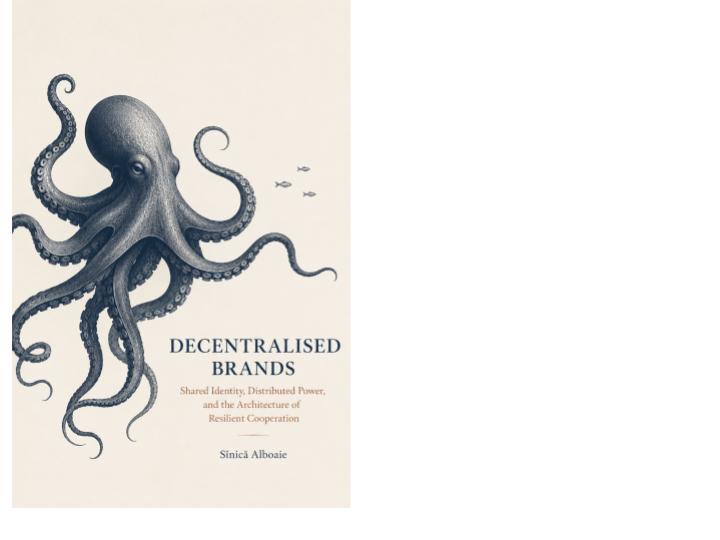

Culture, Care & Experiments · Axiologic Research Editions
Decentralised Brands
How Communities Can Own What They Build
Look beyond logos and marketing to the machinery that carries reputation across distance. Then imagine several autonomous organizations sharing a recognizable promise without surrendering their futures to one owner. The book invites you to ask where authority really sits, how power returns, and whether trust can form an archipelago instead of an empire.
Loading editions…
75 pagesLoading available editions…
Shared value needs shared stewardship
Brands can coordinate people, trust and value, but their ownership often remains centralised. This book explores ways communities might build and govern their shared work without losing the ability to question its direction.